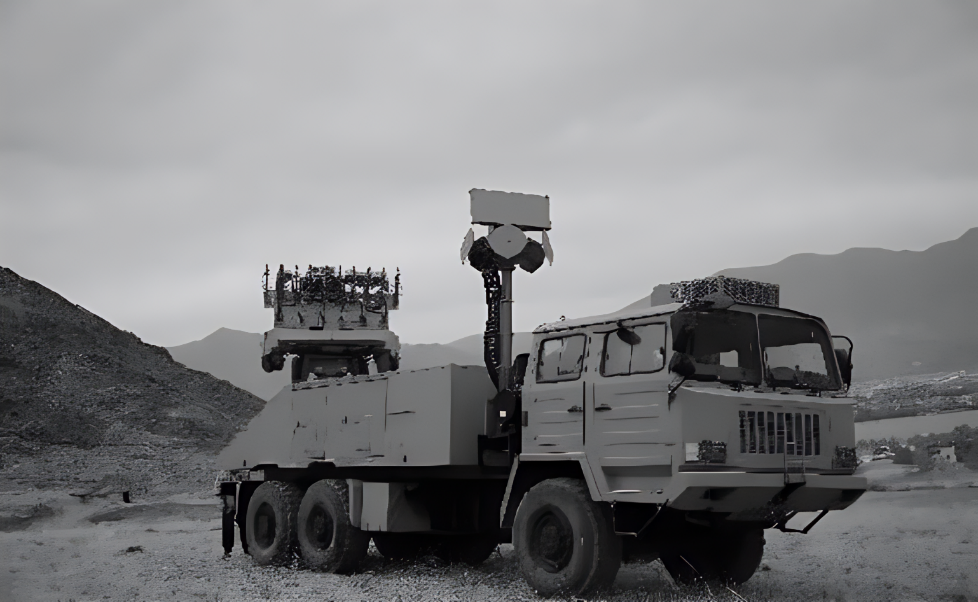
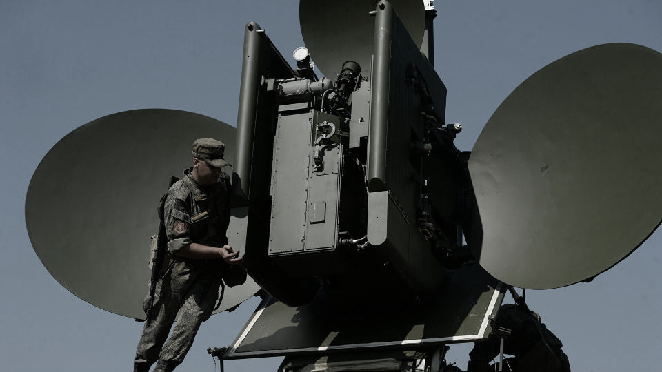
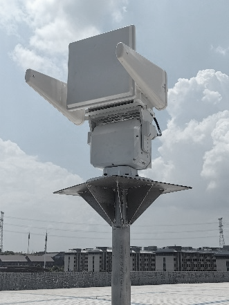
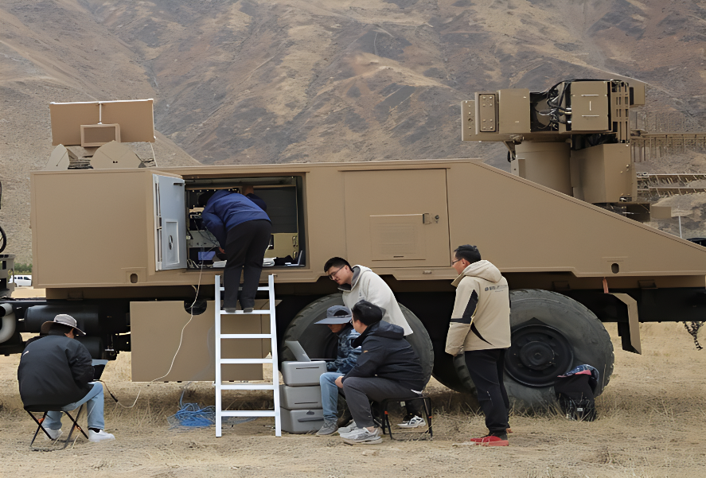

高原演练低空安保复盘：复杂环境下怎么扛得住、打得准
导读 本文面向公安及重大活动/要地安保管理部门，以军队高原演练低空安全防护为样本，复盘复杂环境下装备如何过「环境关」与「实战关」，以及多源协同如何支撑指挥决策。
导语：高原不是实验室，容错更低
城市活动安保考的是人流与空域管理；高原演练考的是另一件事——装备能不能在严酷环境里稳定工作，并迅速形成可用战斗力。
温度扛不扛得住？沙尘雨雪进不进得去？到了现场，多源设备能不能很快协同起来？处置结果能不能及时回到指挥链路？
在军队高原演练保障任务中，羽嘉科技以车载一体化反无人机系统全程提供低空安全防护。公开复盘口径显示：系统在复杂高原条件下稳定运行，精准处置各类无人机威胁，为指挥部提供实时数据，环境适应性与实战表现获军方高度认可。

车载一体化系统 · 高原山地部署（公开材料）
一 场景挑战：为什么高原是「硬考场」？
高原演练的低空防护，难在环境与任务同时加压。
• 第一，环境极端。高寒、昼夜温差、高湿、沙尘、暴雨都可能出现，普通消费级或城市型装备很难直接搬上去用。
• 第二，部署窗口短。演练节奏快，设备到场后必须尽快调试到位，不能靠漫长磨合。
• 第三，指挥要求高。低空态势要服务指挥决策，看见目标只是第一步，还要协同处置、数据回传、过程可控。
因此，高原任务检验的不是「参数表好不好看」，而是：恶劣条件下能不能稳定跑、协同打、服务指挥。
复杂环境里的低空治理，先过环境关，再谈实战关。
二 环境适应性：先让装备在高原站得住
高原案例的第一条能力轴，是环境适应性。
公开材料给出的工程指标是：系统工作温度覆盖 −40℃～65℃，防护等级达到 IP67，能够抵御高温、低温、高湿、沙尘、暴雨等恶劣条件。对高原山地部署而言，这意味着车载平台与探测反制载荷，不是「天气好才开机」，而是按全天候值守来设计。

雷达探测设备 · 高原架设（公开材料）
支撑这一表现的，除整机工程设计外，还包括自主设计的超宽频带干扰天线阵列等关键组件——目标仍是在复杂电磁与气候条件下保持可用，而不是只在理想实验室指标上好看。
装备过得了高原这一关，城市与大型活动场景才更有底气。

探测设备 · 全天候值守（公开材料）
三 实战表现：多源协同，快速形成战斗力
第二条能力轴，是实战表现。
现场把雷达、可见光/红外光电、无线电压制等多种手段协同起来：雷达与光电负责发现与确认，无线电压制等手段按任务需要实施管控与处置。关键不在单设备「单打独斗」，而在到场后灵活调试、高效联调，尽快把分散能力拧成一条可用的实战链路。

技术团队现场调试 · 快速形成战斗力（公开材料）
公开口径强调两点：一是能够精准处置各类无人机威胁；二是能够为指挥决策提供实时数据。前者管住低空风险，后者把态势送进指挥流程——演练场景里，这两点同样重要。
高原实战要的不是堆设备，而是到场就能协同、协同就能出结果。
四 察控打评：复杂环境里同样要跑闭环
即便场景从城市转到高原，底层逻辑仍是「察 · 控 · 打 · 评」。
• 察：多源探测持续盯住低空目标；
• 控：结合威胁属性与任务区域做研判定级；
• 打：按演练规则与安全边界实施审慎、可控处置；
• 评：过程与结果可回传、可复盘，服务指挥与后续改进。

羽嘉科技「猎场一号」警用低空防务智能实战平台，正是把上述闭环做成可调度的业务系统：兼容主流侦测反制设备，支撑重大活动、核心要地与复杂环境验证等场景的统一协同。
能在高原跑通闭环，说明体系不只适应城市，也经得起极端条件检验。
结 环境关与实战关，一起过才算过关
军队高原演练给出的启示很清楚。
• 第一，复杂环境首先考验工程可靠性：温湿度、防护等级、天线与整机设计，决定系统能不能「站得住」。
• 第二，站得住之后，还要「打得准、报得快」：多源协同、现场联调、指挥数据回传，缺一不可。
• 第三，获军方高度认可，本质是对环境适应性 + 实战表现的双重背书——这对公安重大活动与城市要地防护同样有参考价值。
从文化节、博览会、国际盛会到高原演练，场景不同，标准递进。城市要稳，高原要硬。硬过了，稳才更可信。
—— 关于我们 ——
羽嘉科技，城市级低空安全解决方案提供商，
「猎场一号」警用低空防务智能实战平台研发者。
让低空管理从「被动应对」转向「主动防控」。
免责声明：本文相关信息引自公开交流材料与行业实践复盘，仅供交流参考，不涉及部队番号、演训课目细节、部署点位与设备数量，不构成任何决策依据。如有侵权请联系删除。
使用说明：浏览器打开可预览。发公众号时按「配图/配图清单.md」上传 00–05（仅高原材料）。